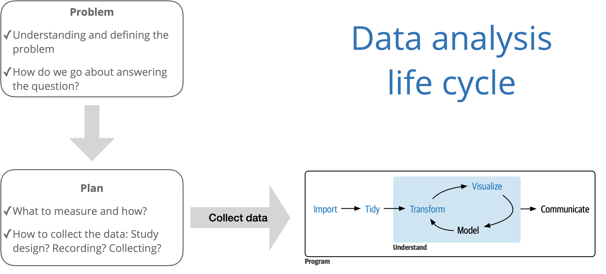

`stat_bin()` using `bins = 30`. Pick better value with `binwidth`.
`stat_bin()` using `bins = 30`. Pick better value with `binwidth`.
Analyzing multivariable relationships + Reproducibility
Learn R: An interactive introduction to data analysis R (focus on Chapters 4 - 6)
Duke Library Center for Data and Visualization Sciences workshops
R for Lunch: data wrangling with dplyr (Fri, Sep 1, 12:30 - 1:30)
R for Lunch: visualization with ggplot2 (Fri, Sep 8, 12:30 - 1:30)
See the CDVS website for more information and to register.


What does it mean for an analysis to be reproducible?
. . .
Near term goals:
✔️ Can the tables and figures be exactly reproduced from the code and data?
✔️ Does the code actually do what you think it does?
✔️ In addition to what was done, is it clear why it was done?
. . .
Long term goals:
✔️ Can the code be used for other data?
✔️ Can you extend the code to do other things?
Results produced are more reliable and trustworthy (Ostblom and Timbers 2022)
Facilitates more effective collaboration (Ostblom and Timbers 2022)
Contributing to science, which builds and organizes knowledge in terms of testable hypotheses (Alexander 2023)
Possible to identify and correct errors or biases in the analysis process (Alexander 2023)
| Reproducibility error | Consequence | Source(s) |
|---|---|---|
| Limitations in Excel data formats | Loss of 16,000 COVID case records in the UK | (Kelion 2020) |
| Automatic formatting in Excel | Important genes disregarded in scientific studies | (Ziemann, Eren, and El-Osta 2016) |
| Deletion of a cell caused rows to shift | Mix-up of which patient group received the treatment | (Wallensteen et al. 2018) |
| Using binary instead of explanatory labels | Mix-up of the intervention with the control group | (Aboumatar and Wise 2019) |
| Using the same notation for missing data and zero values | Paper retraction | (Whitehouse et al. 2021) |
| Incorrectly copying data in a spreadsheet | Delay in the opening of a hospital | (Picken 2020) |
Source: Ostblom and Timbers (2022)
Scriptability \(\rightarrow\) R
Literate programming (code, narrative, output in one place) \(\rightarrow\) Quarto
Version control \(\rightarrow\) Git / GitHub
You will start using these computing tools in Lab 01.
R is a statistical programming language
RStudio is a convenient interface for R (an integrated development environment, IDE)

Fully reproducible reports – the analysis is run from the beginning each time you render
Code goes in chunks and narrative goes outside of chunks
Visual editor to make document editing experience similar to a word processor (Google docs, Word, Pages, etc.)

Every application exercise and assignment is written in a Quarto document
You’ll have a template Quarto document to start with
The amount of scaffolding in the template will decrease over the semester

with human readable messages


Provides a clear record of how the analysis methods evolved. This makes analysis auditable and thus more trustworthy and reliable. (Ostblom and Timbers 2022)
Starbucks often displays the total calories in their food items but not the other nutritional information.
Carbohydrates are a body’s main fuel source. The Dietary Guidelines for America recommend that carbohydrates make up 45% to 65% of total daily calories.1
Our goal is to understand the relationship between the amount of carbohydrates and calories in Starbucks food items. We’d also like to assess if the relationship differs based on the type of food item (bakery, salad, sandwich, etc.)
carb: Total carbohydrates (in grams)calories: Total caloriesbakery: 1: bakery food item, 0: other food typecarb is the response variable
. . .
calories, bakery are the predictor variables
`stat_bin()` using `bins = 30`. Pick better value with `binwidth`.
`stat_bin()` using `bins = 30`. Pick better value with `binwidth`.
`geom_smooth()` using formula = 'y ~ x'
\[\text{carb} = f(\text{calories}, \text{bakery}) + \epsilon\]
. . .
`geom_smooth()` using formula = 'y ~ x'
\[\text{carb} = \beta_0 + \beta_1 ~\text{calories} + \epsilon\]

\[\text{carb} = \beta_0 + \beta_1 ~\text{calories} + \beta_2 ~\text{bakery} + \epsilon\]
`geom_smooth()` using formula = 'y ~ x'
\[{\small \text{carb} = \beta_0 + \beta_1 ~\text{calories} + \beta_2 ~\text{bakery} + \beta_3 ~ \text{calories} \times \text{bakery} + \epsilon}\]
Statistical model (also known as data-generating model)
\[{\small \text{carb} = \beta_0 + \beta_1 ~\text{calories} + \beta_2 ~\text{bakery} + \beta_3 ~ \text{calories} \times \text{bakery} + \epsilon}\]
Models the process for generating values of the response in the population (function + error)
. . .
Regression equation
Estimate of the function using the sample data
\[{\small \hat{\text{carb}} = \hat{\beta}_0 + \hat{\beta}_1 ~\text{calories} + \hat{\beta}_2 ~\text{bakery} + \hat{\beta}_3 ~ \text{calories} \times \text{bakery}}\]
Prediction: Expected value of the response variable for given values of the predictor variables
Inference: Conclusion about the relationship between the response and predictor variables
What is an example of a prediction question that can be answered using the model of carb vs. calories and bakery?
What is an example of an inference question that can be answered using the model of carb vs. calories and bakery?
Reproducibility
It is best practice conduct all data analysis in a reproducible way
We will implement a reproducible workflow using R, Quarto, and git/GitHub
Multivariable relationships
We can use exploratory data analysis to describe the relationship between two variables
We make an assumption about the relationship between variables when doing linear regression
The two main objectives for fitting a linear regression model are (1) prediction and (2) inference
Source: Mayo Clinic↩︎